국민연금을 둘러싼 주요 이슈와 정책, 기금운용 소식까지. 복잡하고 어렵게 느껴졌던 NPS 뉴스를 ChatNPS가 직관적이고 쉽게 풀어준다. 헤드라인만으로는 이해하기 어려웠던 핵심 내용부터 사람들이 가장 궁금해하는 질문까지. AI와의 질의응답 형식으로 한눈에 이해할 수 있도록 정리했다.
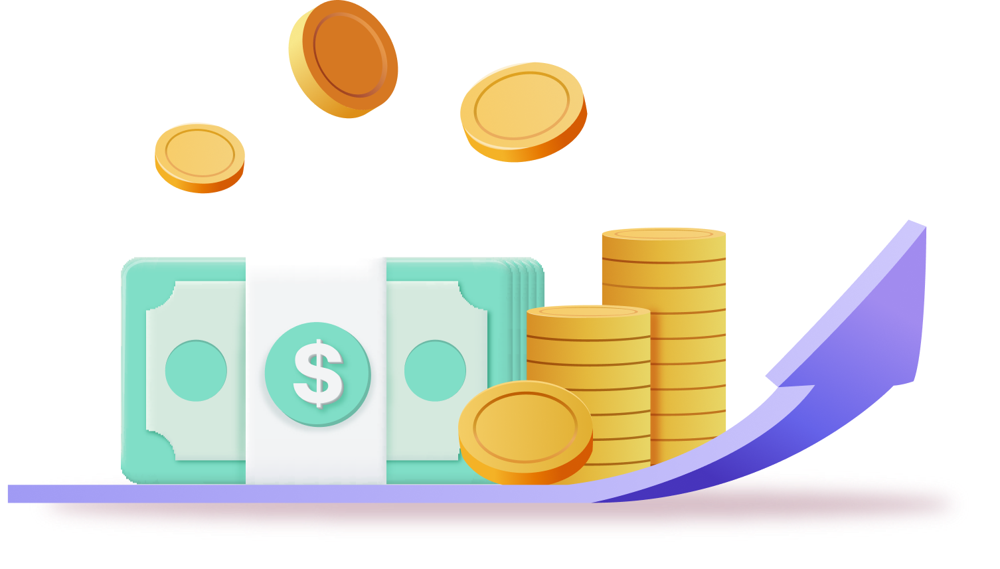
2026년, 국민연금(NPS)이 글로벌 금융시장의 주목을 받고 있다. 세계 경제의 불확실성이 확대되는 가운데, 국민연금은 안정적인 운용 성과를 바탕으로 글로벌 핵심 투자자로 존재감을 키우고 있다. 국민연금이 글로벌 자산배분과 국내 증시 방향성 등에 크게 영향을 미치는 ‘메가 플레이어’로 자리매김하고 있다는 평가가 나온다.
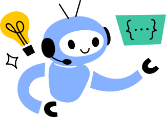
2025년 국민연금은 약 231조 6,000억 원의 운용수익을 기록했어.
수익률은 18.82%로, 1988년 기금 설치 이후 가장 높은 수준이야.
기금 적립금도 2025년 말 기준 1,458조 원까지 늘어나면서
글로벌 연기금 가운데서도 존재감이 더욱 커졌다는 평가가 나오고 있어.
참고로 운용수익금 231.6조 원은 국민연금의 한해 연금지급액인 약 49.7조 원의
4배 이상이야. 운용수익 규모가 상당했다는 걸 알 수 있지.
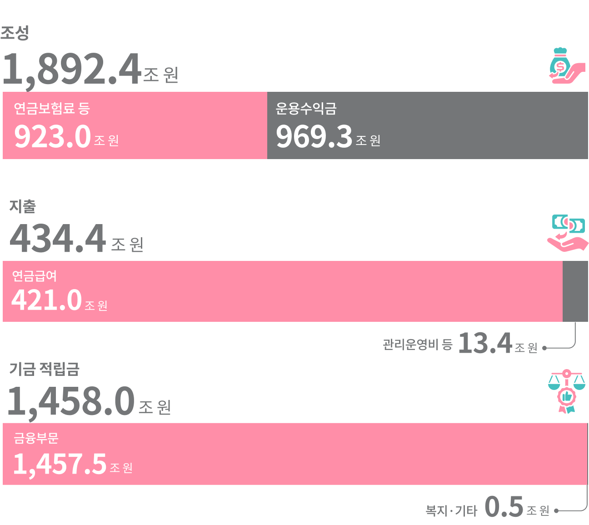
*각 수치는 반올림돼 단수 차이가 발생할 수 있음
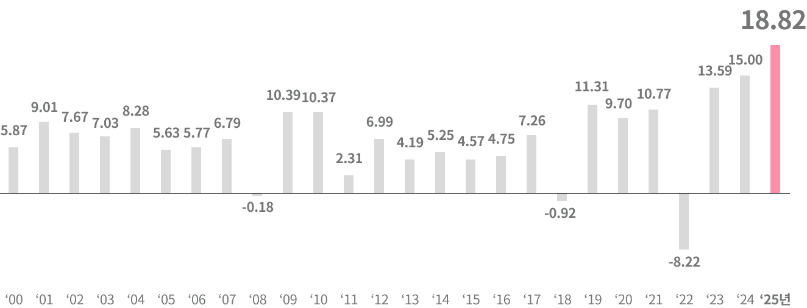
핵심적인 질문이야.
국민연금은 지난해 일본 GPIF(12.3%), 캐나다 CPPIB(7.7%) 등
주요 해외 연기금과 비교해도 높은 수준의 수익률을 기록했어.
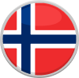
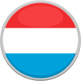
* 해외 연기금의 동일한 비교를 위해 국민연금 수익률도 시간가중수익률 기준으로 작성하였으며
공시되는 금액가중수익률 18.8%와 소폭 차이가 존재함
** 국가별 수익률은 각 연기금 공시자료를 기준으로 추정함
가장 큰 요인은 철저한 리스크관리와 자산배분 다변화야.
해외주식·대체투자·국내 전략자산 등을 유연하게 조정하면서
안정성과 수익성을 동시에 확보했다는 평가를 받고 있어.
특히 인공지능(AI)·반도체 중심 기술주 강세와 국내 증시 상승 흐름이
수익률 개선에 긍정적인 영향을 미쳤어.
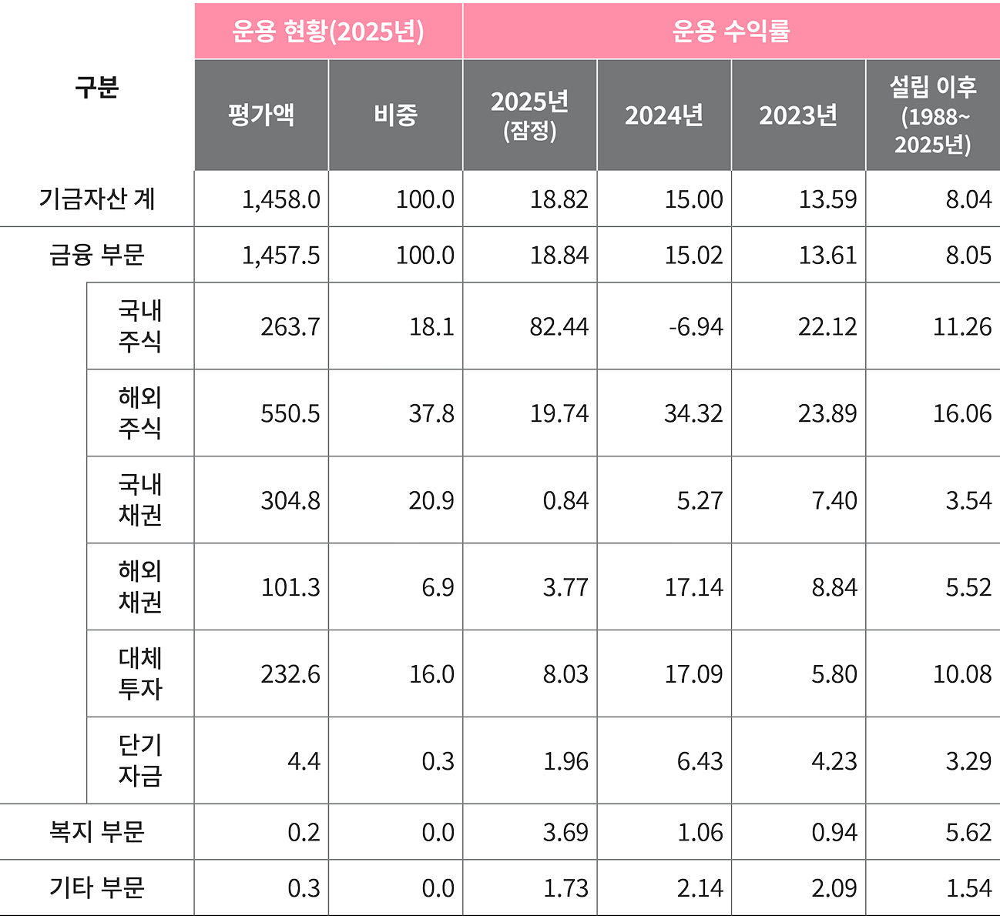
* 2025년 및 설립이후 수치는 잠정치
맞아. 최근 글로벌 자본시장은 장기 투자자와
초대형 기관 자금의 영향력에 주목하고 있어.
국민연금은 기금 규모 확대와 함께 글로벌 시장에서
전략적 가치도 더욱 커지고 있는 상황이야.
시장에서는 장기적으로 운용 역량 강화와 투자 다변화가 중요해질 것으로 보고 있어.
국민연금 역시 지역·자산군 다변화와 리스크 관리 체계를 지속적으로 강화하고 있고, 장기 안정적 수익 기반 확보에 집중하고 있어.
기금 규모가 계속 커지는 만큼, 앞으로의 전략과 운용 방향성에도 관심이 쏠리고 있어.
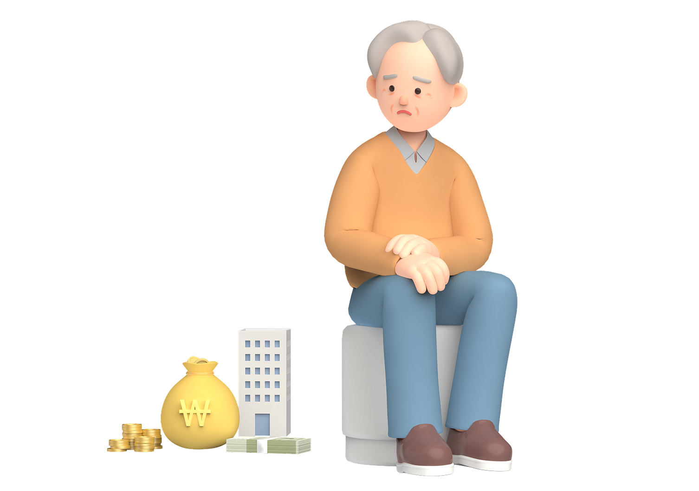
초고령사회 진입과 함께 치매 환자의 재산관리 문제가 새로운 사회적 과제로 떠오르고 있다. 정부는 치매 등으로 재산관리에 어려움이 있는 어르신들이 재산을 보다 안전하게 보호할 수 있도록 ‘치매안심재산관리서비스’ 시범사업을 본격 추진한다. 전문가들은 이번 제도가 단순한 재산관리 지원을 넘어 치매 환자의 경제적 자기결정권 보호와 가족 부담 완화, 재산관리 사각지대 해소를 위한 새로운 공공 안전망으로 자리잡을 수 있을지 주목하고 있다.
2026년 4월 22일부터 시작된 치매공공신탁 시범사업이야.
치매로 인해 판단 능력이 저하되더라도 본인의 재산을 안전하게 관리할 수 있도록 지원하는 공공신탁 기반의 재산관리 서비스라고 보면 돼.
희망하는 본인 또는 가족 등이 국민연금공단 지사에 방문하여 신청하거나 요양시설·치매안심센터 등 유관기관에 의뢰할 수 있어.
지원 대상이 되면 국민연금공단이 각 대상자별로 수립된 재정지원계획에 따라, 정해진 목적에 맞게 생활비나 요양비 등을 지출할 수 있도록 관리해줘.
또 반기별 1회 이상 대상자를 정기적으로 방문하고 지출내역을 확인하는 등 상시 모니터링을 진행해.
고령화로 치매 환자가 빠르게 늘어나면서 금융사기, 경제적 학대, 가족 간 재산 갈등 같은 문제도 함께 증가하고 있는데, 이런 재산관리 사각지대를 줄이기 위해 도입된 제도야.
경도치매 판정(CDR 1점)을 받은 A씨와 그의 배우자 B씨는 ‘부부치매’ 가구이며, 떨어져서 사는 자녀가 1명(C) 있습니다. 두 사람은 매달 들어오는 연금과 예금 등 노후 자산을 생활비·의료비로 제대로 쓰는 데 어려움이 있으며, 자녀 C씨는 직접 곁에서 부모님의 재산을 일일이 챙기기 어려운 상황입니다.
어느 날 A씨는 치매안심센터를 통해 ‘치매안심재산관리서비스 시범사업’을 알게 되었고, 관할 치매안심센터는 인근 국민연금공단 지역본부에 A씨를 의뢰하였습니다.
이후 지역본부에서 C씨가 동행한 상태에서 A씨와 B씨를 방문하여 재산 내역, 주변에 도움 사람이 있는지 여부, 원하는 서비스 등을 확인합니다.
지역본부 상담사는 상담 내용을 바탕으로 재정지원계획을 수립했습니다. 계획에는 월별로 필요한 지출항목과 범위 등이 포함되며, 이에 근거해 신탁계약서가 작성됩니다.
재산은 배분계획에 따라 집행되며, C씨는 부모님의 재산이 부모님을 위해 안전하게 사용되는지 정기적으로 확인할 수 있습니다. 부모님은 생활비와 의료비를 안정적으로 지원받으면서도 혹시 모를 예기치 못한 상황에 대비하기 위해 비상금을 저축할 수 있게 되었습니다.
국민연금공단은 계획대로 지급되고 있는지 정기적으로 모니터링합니다. 이상징후가 발생하면 찾아가 상태를 파악하기도 합니다. 또한, 사망사실이 확인되면 연속수익자인 배우자인 B씨에게 지급이 이어지며, B씨가 사망한 후에는 민법상 상속 절차가 진행되어 자녀인 C씨에게 지급됩니다.
치매안심재산관리서비스는 비상금 저축 등 재산을 체계적으로 관리하여 치매 가구의 재정 안정성을 확보하면서도 경제적 피해 위험을 감소시켜 치매 가구의 경제적 고립을 막을 수 있습니다.
기본적으로는 기초연금을 받는 65세 이상 어르신 가운데, 치매나 경도인지장애 등으로 재산관리에 어려움이 있는 경우를 대상으로 해.
다만 예외적으로 65세 미만 조기치매 환자이거나 저소득층에 해당하는 경우에도 재산관리 위험도를 고려해 지원받을 수 있어.
참고로 기초연금수급권이 없는 어르신(65세 이상)이 서비스 이용을 희망할 경우 일정 수준의 이용료(위탁재산의 연 0.5%)를 부담해야해.
이용 방법 및 절차
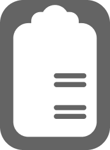
국민연금공단
국민연금공단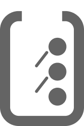
치매안심센터
상담을 통해서 본인이 원하는 수준의 재산을 위탁할 수 있어.
위탁 가능한 재산은 현금, 주택연금 등 현금성 자산 중심으로 보면 돼.
가장 큰 목적은 치매 환자의 재산을 안전하게 보호하는 거야.
경제적 학대나 재산관리 공백을 줄이고, 치매 이후에도 본인의 의사가 존중될 수 있도록 돕는 새로운 노후 안전망이라는 점에서 의미가 있어.
정부는 이번 시범사업을 시작으로 2년 간의 점검을 거쳐 2028년 본사업을 도입할 계획이야.
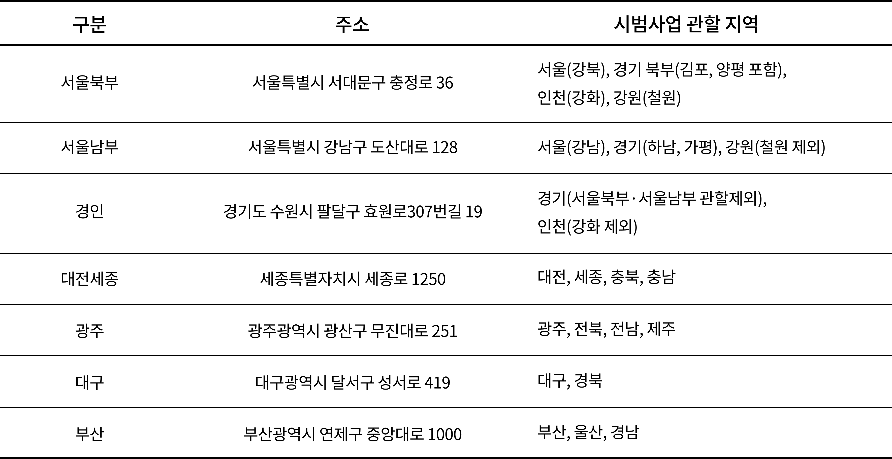
대상자/가족/지역사회/국가 4가지로 분류하여 요약해줄게.
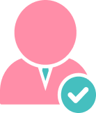
대상자
개인별 재정지원계획에 따라 월별 자금지출을 체계적으로 관리할 수 있기 때문에, 내 재산을 내 노후를 위해 안전하고 계획적으로 사용할 수 있어.
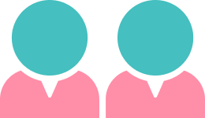
가족
신뢰할 수 있는 공공기관이 함께 재산을 관리하고 모니터링을 하기 때문에 경제적 학대나 부정 사용 위험을 예방할 수 있어.
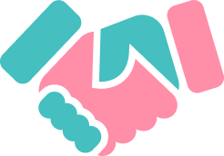
지역사회
경제적 학대와 부정 사용을 미연에 방지하여 재산관리 사각지대를 해소할 수 있고, 더 나아가 지역사회 복지안전망에 기여할 수 있어.
국가
재산관리 안전망이 구축되고 사회보장급여 절감으로 재정건전성이 확보될 수 있어.

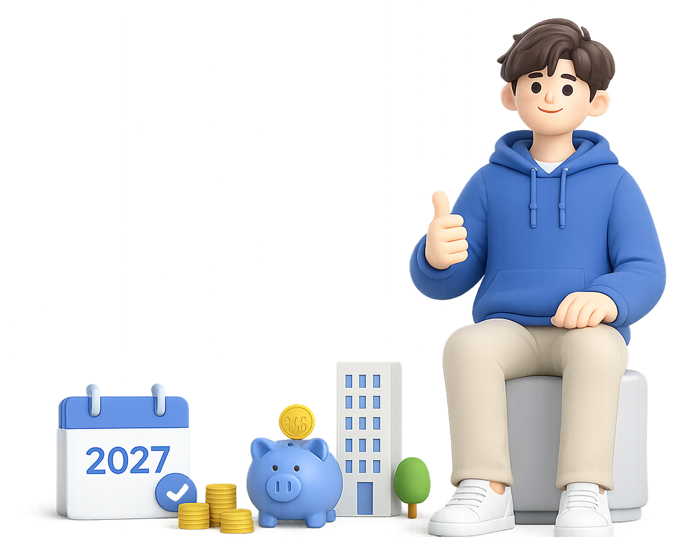
청년들의 국민연금 가입 문턱을 낮추기 위한 새 제도가 도입된다. 정부는 2027년부터 만 18세가 되는 2009년생부터 생애 첫 1개월분 국민연금 보험료를 지원하기로 했다. 학업·군 복무 등으로 가입이 늦어지는 청년 현실을 고려해 조기 가입 이력을 형성하고, 안정적인 노후 준비를 지원하겠다는 취지다. 전문가들은 이번 정책이 단순 보험료 지원을 넘어 청년 세대의 장기적인 연금 수급 기반을 강화하는 계기가 될 것으로 보고 있다.
당연하지.
국민연금은 ‘얼마 냈냐’보다 ‘언제 시작하고, 얼마나 오래냈냐’가
더 크게 작용하는 구조이기 때문이야.
한 번이라도 납부 이력이 생기면
이후에 학업이나 군 복무로 가입기간에 공백이 생겨도
추후납부 제도를 통해 이어갈 수 있어.
쉽게 말하면, 나중에 소득이 생겼을 때
예전에 비어 있던 기간을 채우면서 가입기간을 늘릴 수 있는 거야.
결국 1개월 지원은 금액 자체보다
제도 안으로 들어가는 ‘시작점’을 만들어준다는 의미가 더 커.
아니야. 보험료 지원을 받으려면 18세부터 26세 사이에 직접 신청해야 해.
신청은 2027년부터 국민연금공단 지사나 모바일 앱, 홈페이지에서 할 수 있어.
정부에서는 이러한 지원 내용을 청년들이 충분히 인지하고 활용할 수 있도록
학교와 군부대 등을 중심으로 적극 안내할 예정이야.
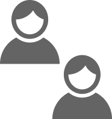
18~26세 중
이미 연금보험료 납부 이력이 있다면
보험료 지원 대신 1개월의 가입기간을 추가로 인정해줘.
아니야. 1개월만 가입한 것으로 처리되기 때문에 더 내지 않아도 돼.
다만 더 납부해서 가입기간을 늘리고 싶다면 국민연금 가입 신청을 통해
계속해서 가입할 수 있어.

연금 생에 설계 가이드
자동가입 여부 확인
자동가입 여부 확인
꼬리에 꼬리를 무는 문화탐구
자동가입 여부 확인
자동가입 여부 확인